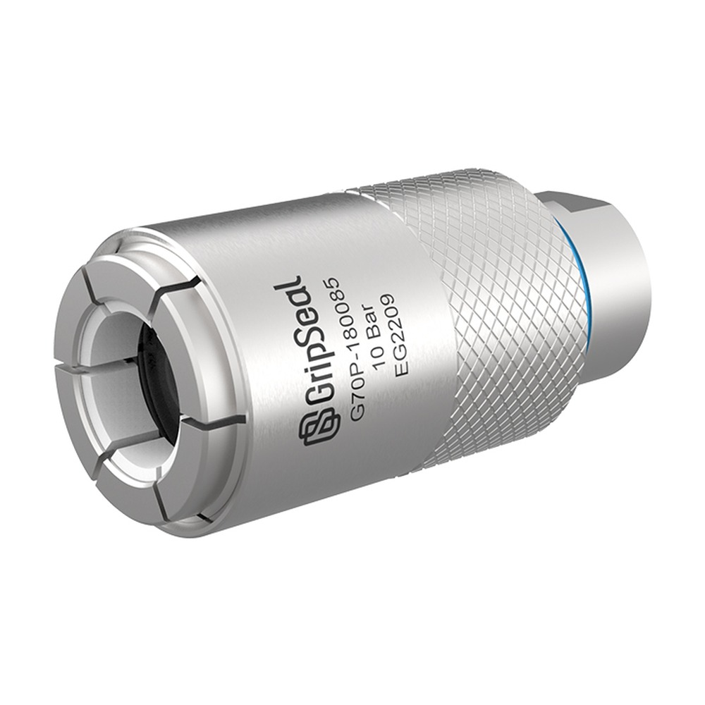
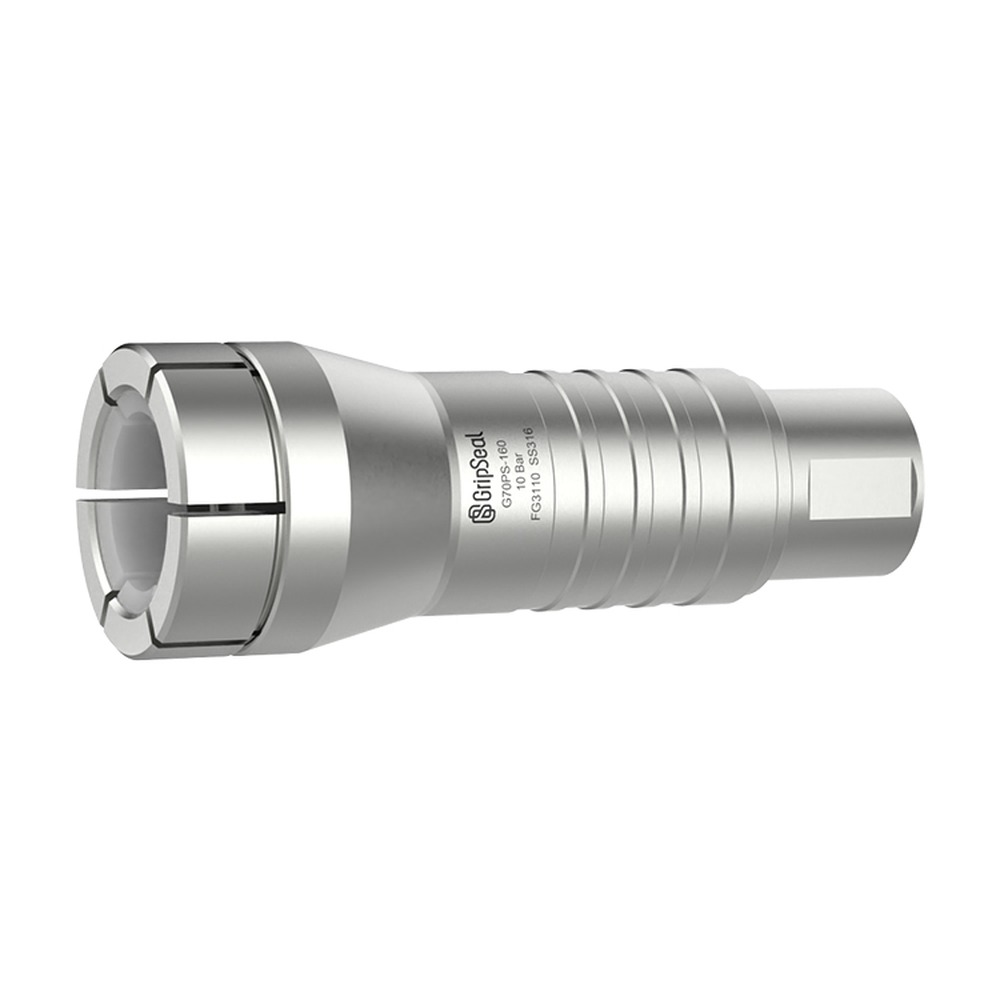
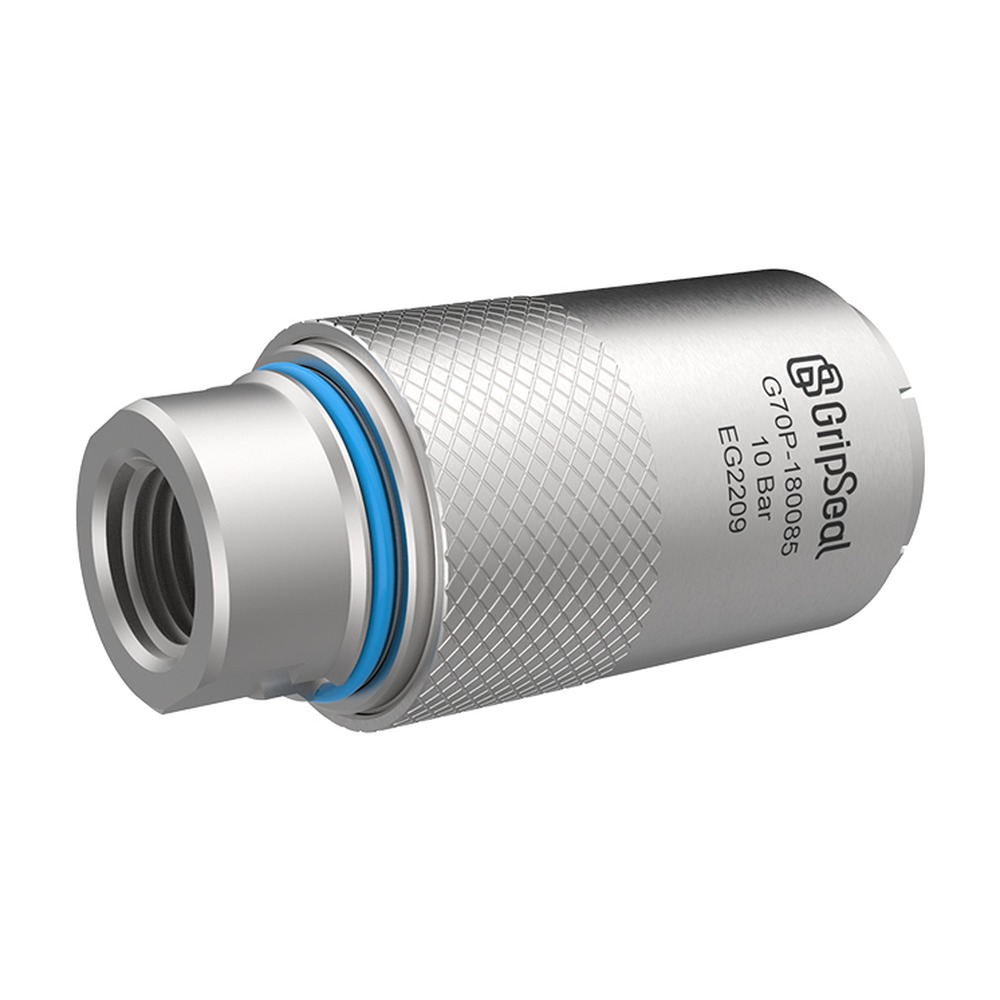
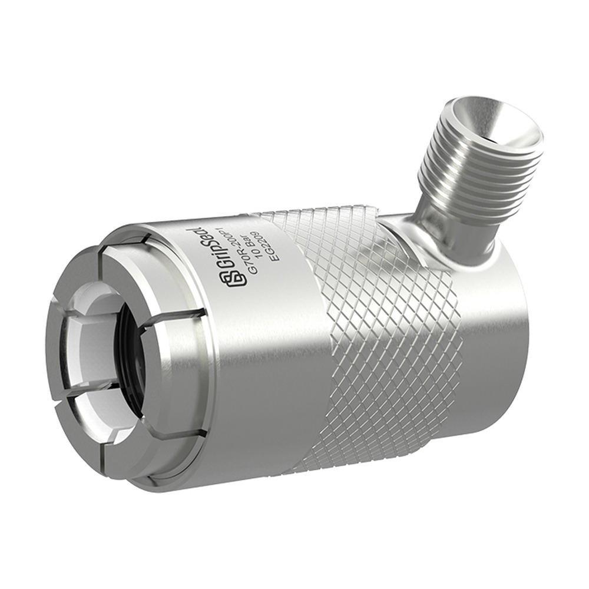

Recommended
Related series comparison
Before fixing the final model, compare adjacent series in the same category.
Pneumatic gas cylinder filling connector for fixture-based filling stations and higher-takt filling applications.



This model page follows a catalog-style structure with product details, model comparison, application notes and engineering selection review.
For industrial stations needing fast connection, repeated sealing and stable test or maintenance takt.
| Series | Gas cylinder filling connector |
|---|---|
| Connection method | Pneumatic gas cylinder filling connection |
| Typical pressure | Project dependent |
| Media | Compressed gas / nitrogen / application gas |
| Actuation | Pneumatic or fixture integration |
| Body material | Aluminium / stainless steel / brass, confirmed by application |
| Seal material | NBR / FKM / EPDM (by media) |

For repeated industrial connections where takt and operating consistency matter.
The exact model depends on port geometry, pressure, media and available operating space.
Manual operation, pneumatic actuation or automated fixture integration can be assessed per project.
Exact dimensions, model codes and drawings are subject to the port and project requirements.
| Model | Port range | Pressure | Media | Actuation | Note |
|---|---|---|---|---|---|
| G70P-01 | Confirm against drawings | Project dependent | Compressed gas / nitrogen / application gas | Pneumatic or fixture integration | Subject to port drawings and project requirements |
| G70P-02 | Confirm against drawings | Project dependent | Compressed gas / nitrogen / application gas | Confirm per project | Subject to port drawings and project requirements |
This series can be evaluated for industrial testing, line-side connections, maintenance ports or filling stations.
For repeated connection points on pressure, flow and leak test benches.
Suited to maintenance or commissioning connections needing fast operation.
When manual operation needs to move to line integration, fixture-compatible solutions can be assessed.
Port-specific notes and project photos can be reviewed together during selection.
Before fixing the final model, compare adjacent series in the same category.